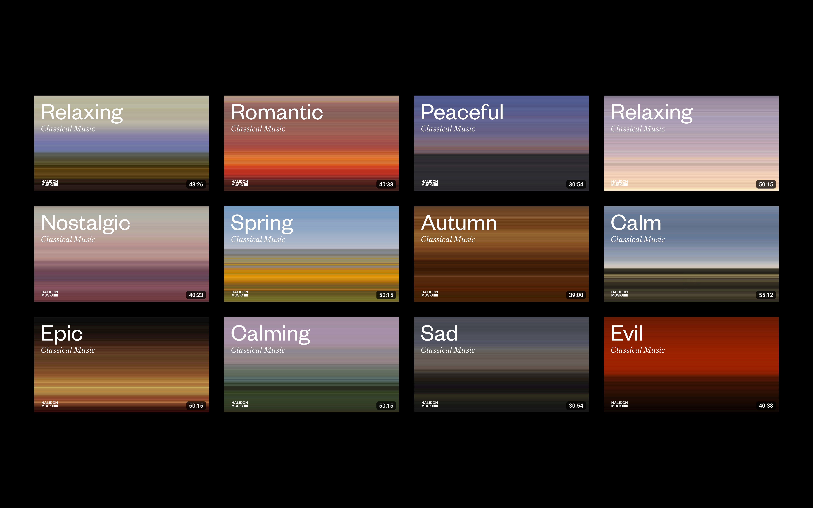
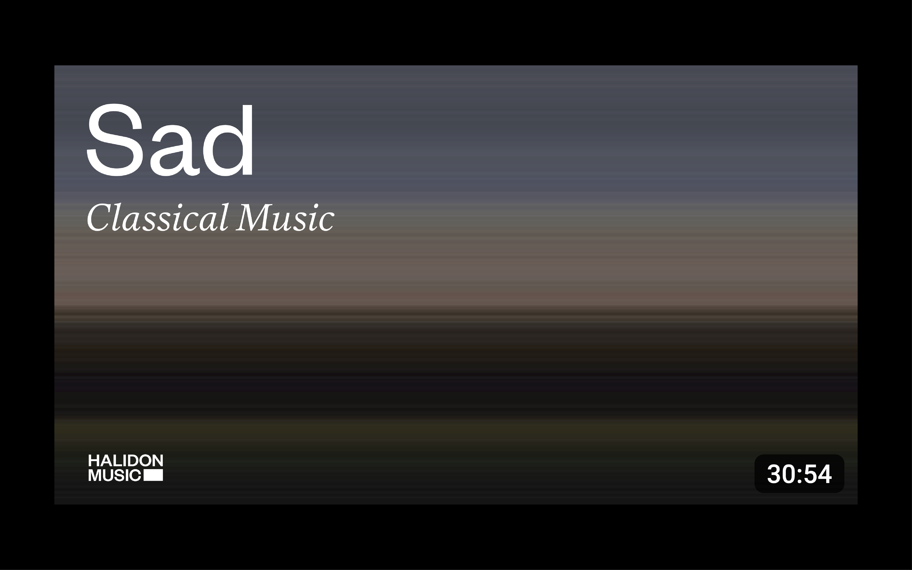
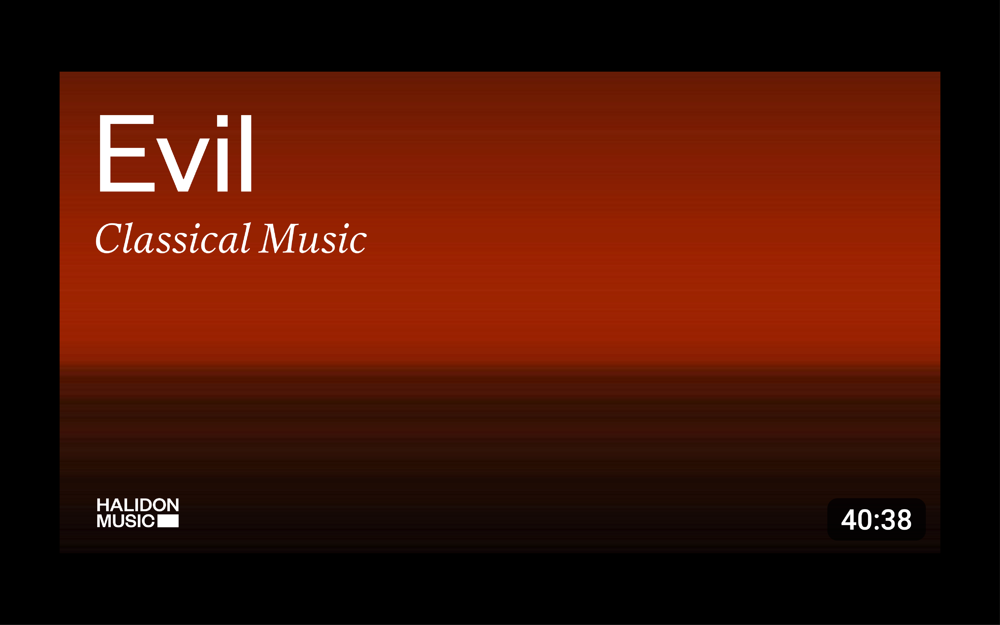
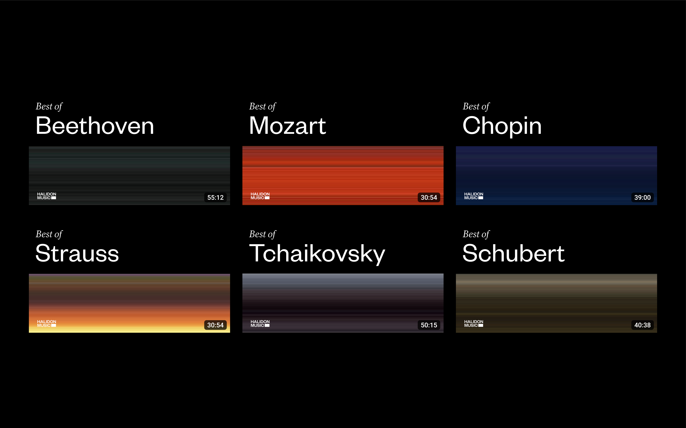

Halidon is an independent Italian record company, music publisher and distributor. They have the license and ownership of a vast music repertoire covering several genres but with a particular focus on classical music. Through their YouTube channel they share music collections with a very large community of classical music fans. Through an observation of their content, I identified a missed opportunity in communicating effectively but most importantly distinctively. While in fact Halidon offers high-level content through its channels, it is not the only one to do so, and obvious communication risks not making it stand out in the appropriate way, communication to which I tried to provide an ad hoc solution.


The line as a metaphor for sound, for notes, repetitive entities, always the same. But it is precisely from the union of the different notes that it becomes possible to create extraordinary symphonies.
